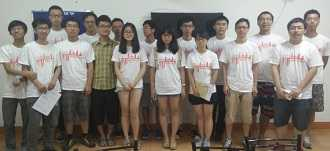

About
上海交通大学助飞计划是由上海交通大学学生事务中心主办，上海交通大学招生办公室以及共青团上海交通大学委员会协助发起的一项暑期社会实践活动。该活动面向上海交通大学在校大学生，在全国范围内开展，以老生(主要是结束大一生活即将升大二的学生)利用暑期社会实践、回家返乡等机会走访新生(尤其是困难新生)的模式，让新生全方位了解交大，帮助其做好全新校园生活的准备，并为困难新生送去学校的各项帮困助学政策及学习资料、爱心车票等物资。
受陕西2013届上海交通大学学长学姐助飞的14届小伙伴们在去年里感受到他们的热情与爱心，因此他们毫不犹豫的加入到今年的助飞计划中来。他们是一群逗比，在大逗比柚子主席的带领下萌萌的逗比们将带着满满的激情与活力向15届小鲜肉们传递助飞的礼包和自己的人（ku）生（bi）经验。
Recent Comments
Who We Are
来自各个学院的大秦助飞er
我们是发自内心来助飞的，真心希望有一些特色的东西能够给小鲜肉带去，真心希望有温暖和感情与帮助的东西一届一届传递下去，带给我们每个人爱与被爱的力量。
发自内心这么煽情的话也放网上~连用两个真心~~本来我还以为真是真心啊~~~还爱与被爱的力量，歌词听多了吧。。。哈哈。果真是逗比。。。。
History
- 2015 -
即将载入史册，敬请拭目以待。
就是这么强
- 2014 -
2014年，强哥等一批13届的学长学姐延续了这个帮困助学的传统，继续进行"助飞计划"实践活动，帮助到了更多的新生，让我们这群逗比安心地圆了交大梦，此次走访覆盖了约2000名新生，重点走访学校"自强计划"和"农村贫困地区定向招生专项计划"中定向招收的310名贫困生，为我们送去学校的各项帮困助学政策和学习资料、爱心车票等物资。
- 2013 -
2013年，学长学姐们在以往经验基础上继续进行"助飞计划"活动，并扩大其影响范围，共有近700名老生报名参加，以"回老家，访老乡"的形式走访了1315名13级新生。走访地区以咱中西部为主，覆盖了全国32个省市地区，入户拜访了136名家庭经济较为困难的新生，使他们在入校前即已了解学校的各项帮困政策，不用在整个暑期都因上大学需要负担高额学费、生活费等难题而发愁，并为99名贫困新生送去了爱心车费、提供绿色通道，使他们能够顺利入学，光明日报、青年报等12家媒体进行过报道，走访期间，共发布人人日志148篇，开学后为150名贫困新生安排了勤工助学岗位，让他们在入学第一个月就拿到第一笔自强自立收入。
- 2012 -
2012年7月，开展为期一周的"助飞计划"。活动突破地域限制，走访了河南、湖南、湖北、四川、江西、云南、重庆、内蒙古八个省市的部分12届交大新生，对学生进行助学政策介绍，为其中部分同学提供路费补贴、预留勤工助学岗位。
Questions
 骗子？
骗子？
不少学长学姐都抱怨被当成骗子，有的同学通过网上查询了解到了真实性，有的同学在往年学长和高中老师的电话中了解到助飞的情况，可有的（--YYY，你好，我是XXX，......来你们家中是否方便？--嗯！你打错了，我不认识YYY！--喂？ 哔哔哔...），我们希望通过我们这一届让更多的人了解助飞，再也不要被当成坏人了。p.s.学妹们，小心那些学长，大都是单身狗哦，，，他们骗的可是姑娘芳心啊！
作为受助者，我需要做什么?
哈哈，小鲜肉嘛，......（由于相关法律法规，此段略去），嘻嘻。（正经点）嗯！你们呀，不要拘束，有任何问题我们都将尽全力去解决，把你们心中那无数的疑问全部砸到学长学姐身上来吧（CONTACT中有QQ等联系方式，有问必答，网站不定期更新）。
来校前有什么必须准备的东西？
如果要申请助学金，请务必填好家庭经济情况调查表并盖章，建议来校后复印5份备用。其余的按入学手册上说的来，不必在本地复印（那里简直敲诈，学校内复印比较便宜）。自行车是必备的，不过还是来了再买吧\>.</,学校里的不少车子特别水，到这会儿我室友300RMB的车子不知道都修了多少次了，建议买稍贵点的，比如我RMB310的就比室友的好到不知道哪里去了（可别说出去，否则室友会虐待我的哦，，）。
笔记本是需要的吗？
如果你是电院的，那当然是没得说咯，如果不是，也基本上需要一台（傻逼嘛，你直接说基本都需要不就得了），经常用电脑，重要度仅次于手机（废话嘛，电子产品就这俩样，B装漏了吧......），所以不建议买4000-的计算机，否则你会越来越崩溃的。没有熟人，就不要去实体店买，否则被坑了还不知道，建议网购，在某些促销时段去买。实际操作上有问题就来找学长学姐嘛~~
柚子学姐:
煜东:
杜帅: